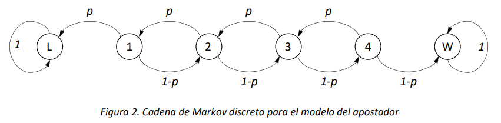

Cadenas absorbentes: Tiempos antes de la absorción y probabilidades de absorción#
Como vimos anteriormente, al caracterizar estados, existen cadenas de Markov que incluyen estados absorbentes y estados transitorios. Los últimos, corresponden a todos aquellos estados desde los cuales es posible alcanzar un estado absorbente. En este capítulo se estudiarán los cálculos de tiempos promedio antes de la absorción, es decir, el tiempo promedio que un proceso estocástico visita los estados transitorios antes de ser absorbido, dado que dicho proceso inicia en un estado transitorio. Posteriormente, se presentan métodos para calcular las probabilidades de que un proceso estocástico termine absorbido en el largo plazo por algún estado absorbente, dado que dicho proceso inicia en algún estado transitorio.
Introducción a cadenas absorbentes#
Una cadena de Markov (discreta o continua) es absorbente si:
Su espacio de estados \(S\) incluye un subconjunto de estados \(A \subset S\) tal que todo estado \(i \in A\) es absorbente;
Para todo estado \(j \in S\backslash A\), existe un estado \(i \in A\) tal que \(j \rightarrow i\).
La definición anterior requiere la existencia de estados absorbentes (punto 1), y que de todo estado que no es absorbente sea posible alcanzar un estado absorbente (punto 2). Como consecuencia, en una cadena absorbente todos los estados que no son absorbentes son transitorios. Por ende, la cadena que se muestra en la figura 1 no es una cadena de Markov absorbente.
Si una cadena posee un estado absorbente no es ergódica, ya que pasaría a ser reducible. Consecuentemente, en el largo plazo la CMTC alcanzará un estado límite por el cual la probabilidad de estar en un estado transitorio se vuelve nula y se tiene 100% de certeza que la CMTC ocupará el estado absorbente o algún estado de la clase comunicante cerrada. El análisis en el largo plazo de este tipo de cadenas permite determinar las probabilidades con las que ocurren estos eventos.
Consideramos una cadena de Markov absorbente en tiempo discreto \(\{ Z_{n},n \geq 0\}\), con un espacio de estados \(S\) que contiene un número finito \(N\) de estados. Supongamos que de los \(N\) estados de \(S\), \(N_{A}\) sean absorbentes y \({N - N}_{A} = N_{T}\) transitorios. Denotamos con \(A \subset S\) y con \(T \subset S\) los subconjuntos de los estados absorbentes y transitorios de la cadena, respectivamente. Por la definición misma de cadena absorbente, se tiene que \(A \cup T = S\) y también que \(A \cap T = \varnothing\), o sea \(A\) y \(T\) forman una partición de \(S\). Si se ordena el espacio de estados de manera que primero listemos los \(N_{T}\) estados transitorios y después aquellos absorbentes, y se escribe la matriz \(\mathbb{P}\) de probabilidades de transición a un paso según dicho ordenamiento, se observa la siguiente estructura de la matriz:
Si tomamos un estado \(i\) en \(A\) y un estado \(j\) en \(T\), \(p_{ij} = 0\), \(p_{ii} = 1\), ya que \(i\) es absorbente.
Las dos sub-matrices en la parte superior de la matriz \(\mathbb{P}\) son la matriz cuadrada \(\mathbb{Q}\), de dimensiones \(N_{T} \times N_{T}\), contiene todas las probabilidades de transición entre estados transitorios, mientras que la matriz rectangular \(R\), de dimensiones \(N_{T} \times N_{A}\), contiene todas las probabilidades de transición entre estados transitorios y estados absorbentes. Las dos sub-matrices en la parte inferior de la matriz \(\mathbb{P}\) son la matriz rectangular \(N_{A} \times N_{T}\) de valores nulos, y la matriz identidad de dimensión \(N_{A}\).
De una manera análoga, si \(\{ X(t),t \geq 0\}\) es una cadena de Markov absorbente en tiempo continuo, reordenando el espacio de los estados para separar los estados transitorios de aquellos absorbentes, es posible obtener la siguiente forma de la matriz generadora \(\mathbb{Q}\):
La sub-matriz \(\mathbb{U}\) contiene las tasas de transición entre estados transitorios, y la sub-matriz \(\mathbb{V}\) aquellas entre estados transitorios y absorbentes de la cadena. En este tipo de cadenas, la matriz de estados absorbentes a absorbentes se identifica por estar compuesta de 0 únicamente, al no existir ninguna tasa de salida de un estado absorbente.
Tiempo antes de la absorción en Cadenas de Markov de Tiempo Discreto#
Consideremos una Cadena de Markov absorbente, y preguntémonos cuál es el número promedio de veces que un estado transitorio \(j\) es visitado, si el estado inicial de la cadena es el estado transitorio\(\ i\), antes de que la cadena alcance uno de los estados absorbentes.
Recordando, la matriz de probabilidades de transición a un paso para una cadena absorbente tiene la siguiente estructura:
donde \(\mathbf{Q}\) es la submatriz de las probabilidades de transición entre estados transitorios, y \(\mathbf{R}\) la submatriz de probabilidades de transición entre estados transitorios y absorbentes. Asimismo, si se define la matriz \(\mathbb{M}^{n}\) como la matriz que contiene el número de transiciones entre de cada par de estados \((i,j) \in S\) luego de \(n\) transiciones[1], el número de visitas a los estados transitorios puede ser determinado a partir del límite \(\lim_{n \rightarrow \infty}{\mathbf{M}}^{n}\). Lo anterior, gracias a que si dejamos que \(n\) se vuelva muy grande, la parte asociada a los estadios transitorios convergerá a un valor finito, ya que la cadena será absorbida. Podemos escribir el límite como sigue:
Ahora bien, la \(n\)-ésima potencia de la matriz \(\mathbf{P}\), para una cadena absorbente se puede describir como:
Y la matriz \(\mathbf{M}^{n}\) para una cadena de Markov en tiempo discreto absorbente será entonces:
Por la naturaleza de la cadena, el número promedio de visitas a estados absorbentes será creciente en \(n\), mientras el número promedio de visitas a estados transitorios tendrá un límite finito. Dado que en este análisis pretendemos evaluar en el número promedio de visitas a estados transitorios cuando el estado inicial es transitorio, el bloque de la matriz \(\mathbf{M}^{n}\) que nos interesa es el primer bloque diagonal. Por esta razón se tiene que:
Entonces, el elemento \(i,j\) de la matriz \({\mathbb{(I -}\mathbf{Q})}^{- 1}\) es el tiempo promedio que la cadena pasa en el (o el número promedio de visitas al) estado transitorio \(j\), dado que empieza en el estado transitorio \(i\), antes de alcanzar cualquier estado absorbente.
Tiempo antes de la absorción en Cadenas de Markov de Tiempo Continuo#
Para una Cadena de Markov en tiempo continuo absorbente, recordemos que la matriz de tasas de transición \(\mathbf{Q}\) tiene la siguiente estructura:
donde \(\mathbb{U}\) es la submatriz de las tasas de transición entre estados transitorios y \(\mathbb{V}\) la submatriz de las tasas de transición entre estados transitorios y estados absorbentes. Debido a esta particular estructura, el exponencial matricial \(e^{\mathbf{Q} \bullet t}\) tiene la siguiente forma:
Si \(i \in S\) es el estado inicial transitorio de la cadena en tiempo continuo, y \(j \in S\) es otro estado transitorio de la cadena, el tiempo esperado que la cadena pasa en \(j\) antes de la absorción, dado que empezó en \(i\), se puede calcular a partir del límite cuando \(t \rightarrow \infty\) de la integral del elemento \(i,j\) de la matriz \(e^{\mathbf{Q} \bullet t}\). Observemos que, dado que ambos \(i\) y \(j\) son estados transitorios de la cadena, el elemento \(i,j\) de la matriz \(e^{\mathbf{Q} \bullet t}\) es un elemento de la submatriz \(e^{\mathbb{U \bullet}t}\). Dado que la submatriz \(\mathbb{U}\) es invertible, la integral de \(e^{\mathbb{U \bullet}t}\) tiene la siguiente forma explícita:
Entonces, el límite cuando \(t \rightarrow \infty\) de la integral es:
Donde se utiliza el hecho de que en el límite cuando \(t \rightarrow \infty\) todo elemento de la matriz \(e^{\mathbb{U}t}\) converge a cero por ser la probabilidad de que la cadena absorbente se encuentre en un estado transitorio. Entonces, si \(i\) es el estado inicial de la cadena y \(j\) otro estado transitorio, el elemento \(i,j\) de la matriz \(- \mathbb{U}^{- 1}\) es el tiempo promedio que la cadena pasará en el estado \(j\), dado que empezó en el estado \(i\), antes de la absorción.
Probabilidades de absorción para cadenas de tiempo discreto#
En esta sección consideramos una cadena absorbente en tiempo discreto, y vamos a proporcionar un método para calcular las probabilidades de absorción en el largo plazo de la cadena desde los estados transitorios. Primero, observamos que la cadena cumpla con las definiciones de cadena absorbente definidas anteriormente**.** También, observamos que si el número de estados absorbentes \(N_{A}\) es igual a 1, el problema es trivial, ya que la cadena será absorbida en el único estado absorbente con total certeza.
Supongamos entonces que la cadena tenga un número de estados absorbentes \(N_{A} > 1\), y queremos determinar las probabilidades de absorción en cada uno de esos estados. Esta situación se encuentra a menudo en el análisis de sistemas, por ejemplo, cuando existen dos posibles estados de parada para su evolución, con características o significado diferentes. Quizá el ejemplo más clásico sea el modelo del apostador (gambler ruin problem, en inglés), que representa la evolución del monto de dinero de un apostador, que en cada ronda del juego gana o pierde de manera probabilística una cantidad de dinero, y puede terminar el juego ganándole al banco o perdiéndolo todo. Para este ejemplo, podemos considerar el modelo de cadena de Markov en tiempo discreto absorbente que se ilustra en la siguiente figura:

En el modelo del apostador que se presenta en la Figura 2, el apostador puede en cada ronda perder un dólar con probabilidad \(p\) o ganar uno con probabilidad \(1 - p\). Si alcanza a ganar 5 dólares (estado \(W\)), se retira del juego. Si pierde todo el dinero (estado \(L\)), también el juego terminará. Una pregunta interesante para este problema es determinar la probabilidad de ganar o perder el juego dado el estado inicial, para lo cual es necesario evaluar las probabilidades de absorción de la cadena en el largo plazo.
En términos de la distribución de estado del proceso estocástico, lo que se quiere calcular es el siguiente límite:
Aquí vale la pena observar que el cálculo del límite en la expresión (3) toma los valores mostrados a continuación, de acuerdo con los valores de \(i\) y \(j\):
Para calcular el límite de las probabilidades condicionales en la expresión (3), observamos que \(P\left\lbrack Z_{n} = i \middle| Z_{0} = j \right\rbrack\) es el elemento \(i,j\) de la matriz \(\mathbb{P}^{n}\), la potencia \(n\)-ésima de la matriz de probabilidades de transición \(\mathbb{P}\). La estructura en bloques de la matriz \(\mathbb{P}\), que se muestra en (1), determina una estructura particular de las potencias \(\mathbb{P}^{2}\),\(\mathbb{P}^{3}\),\(\ldots\). En particular, para \(\mathbb{P}^{2}\), es fácil determinar que:
\(\mathbb{P}^{2}\mathbb{= P \bullet P =}\begin{bmatrix} \mathbf{Q} & \mathbf{R} \\ 0 & \mathbb{I} \end{bmatrix} \bullet \begin{bmatrix} \mathbf{Q} & \mathbf{R} \\ 0 & \mathbb{I} \end{bmatrix} = \begin{bmatrix} \mathbf{Q}^{2} & \mathbf{QR} + \mathbf{R} \\ 0 & \mathbb{I} \end{bmatrix} = \begin{bmatrix} \mathbf{Q}^{2} & (\mathbf{Q} + \mathbb{I})\mathbf{R} \\ 0 & \mathbb{I} \end{bmatrix}\).
Para \(\mathbb{P}^{3}\), se obtiene que
\(\mathbb{P}^{3} = \mathbb{P}^{2}\mathbb{\bullet P} = \begin{bmatrix} \mathbf{Q}^{2} & \mathbf{QR} + \mathbf{R} \\ 0 & \mathbb{I} \end{bmatrix} \bullet \begin{bmatrix} \mathbf{Q} & \mathbf{R} \\ 0 & \mathbb{I} \end{bmatrix} = \begin{bmatrix} \mathbf{Q}^{3} & \mathbf{Q}^{2}\mathbf{R} + \mathbf{QR} + \mathbf{R} \\ 0 & \mathbb{I} \end{bmatrix} = \begin{bmatrix} \mathbf{Q}^{3} & {(\mathbf{Q}}^{2} + \mathbf{Q} + \mathbb{I})\mathbf{R} \\ 0 & \mathbb{I} \end{bmatrix}\).
Generalizando para cualquier \(n\), obtenemos que la matriz \(\mathbb{P}^{n}\) tendrá la siguiente estructura en bloques:
En la expresión final para \(\mathbb{P}^{n}\) en (4) cabe recordar que, para toda matriz, la potencia \(0\)-ésima es igual a la matriz identidad (\(\mathbb{I}\)).
Ahora bien, podemos pasar la expresión de la potencia \(\mathbb{P}^{n}\) al límite, como sigue:
Observamos que el límite del primer bloque \(\mathbb{Q}^{n}\) es una matriz nula, dado que la probabilidad de que la cadena quede en un estado transitorio en el largo plazo es nula. En cuanto al límite del bloque súper-diagonal, se tiene lo siguiente:
La expresión (6) se obtiene reemplazando la suma infinita de potencias de la matriz \(\mathbf{Q}\) con la inversa de la matriz \((\mathbb{I} - \mathbf{Q})\). Esta equivalencia es una extensión de las series geométricas de los números reales a las series geométricas de matrices. Tal como la serie geométrica de razón \(x\) converge a \(\frac{1}{1 - x} = (1 - x)^{- 1}\) cuando \(x\) es en módulo menor a 1, la serie geométrica de una matriz \(\mathbb{A\ }\) converge a \(\left( \mathbb{I} - \mathbb{A} \right)^{- 1}\) cuando el módulo del máximo autovalor de \(\mathbb{A}\) (lo que se llama el radio espectral de la matriz \(\mathbb{A}\)) es menor a 1. Esta condición siempre aplica para la matriz \(\mathbb{Q}\) de una cadena de Markov en tiempo discreto absorbente (sin demostración). Entonces, la matriz \(\left( \mathbb{I} - \mathbf{Q} \right)^{- 1}\mathbf{R}\) es la matriz cuyos elementos proporcionan las probabilidades que en el límite la cadena sea absorbida en los estados \(j \in A_{Z}\), dado que el estado inicial es \(i \in T_{Z}\).
Ejemplo 1
Supongamos que la probabilidad de que el apostador gane una ronda del juego es \(p = 0.4\), y calculamos las probabilidades de ganar o perder todo para la cadena de la Figura 2. La matriz de tasas de transición \(\mathbb{P}\), reordenada como se explica anteriormente, es la siguiente:
Se identifican entonces los bloques:
\(\mathbf{Q} = \begin{bmatrix} 0 & 0.4 & 0 & 0 \\ 0.6 & 0 & 0.4 & 0 \\ 0 & 0.6 & 0 & 0.4 \\ 0 & 0 & 0.6 & 0 \end{bmatrix}\), \(\mathbb{R =}\begin{bmatrix} 0.6 & 0 \\ 0 & 0 \\ 0 & 0 \\ 0 & 0.4 \end{bmatrix}\)
La matriz \((\mathbb{I} - \mathbf{Q})\) es la siguiente:
y su inversa \({(\mathbb{I} - \mathbf{Q})}^{- 1}\) es la matriz:
El producto \({(\mathbb{I} - \mathbf{Q})}^{- 1}\mathbb{R}\) es la siguiente matriz de probabilidades:
Entonces, si el apostador empieza a jugar con 1 dólar (primer estado), terminará ganando el juego con probabilidad 0.08. Esta probabilidad se encuentra en la primera fila de la matriz \({(\mathbb{I} - \mathbf{Q})}^{- 1}\mathbb{R}\), ya que 1 es el primer estado, y en la segunda columna, ya que el estado final (\(W\)) es el último de los absorbentes. Si el apostador empieza el juego con 4 dólares (último estado transitorio), la probabilidad de ganar es 0.62. Esta probabilidad se encuentra en la cuarta fila de la matriz \({(\mathbb{I} - \mathbf{Q})}^{- 1}\mathbb{R}\), ya que 4 es el último estado, y en la segunda columna, ya que el estado final (\(W\)) es el último de los absorbentes. Observamos que, por cada fila de la matriz \({(\mathbb{I} - \mathbf{Q})}^{- 1}\mathbb{R}\), la suma de los elementos es 1, ya que con probabilidad 1 la cadena es absorbida (no importa en cual estado absorbente).
Finalmente, si no se conociera con exactitud el estado inicial, para determinar por ejemplo la probabilidad de perder el juego (o sea de que la cadena sea absorbida en el estado \(L\)), podríamos usar la distribución inicial sobre los estados transitorios. Si \(\overrightarrow{\alpha} = (\alpha_{1},\alpha_{2},\alpha_{3},\alpha_{4})\) es el vector de la probabilidad de estado inicial, o sea \(\alpha_{i} = P\lbrack Z_{0} = i\rbrack\), donde es pertinente recalcar que la distribución inicial se define únicamente para los estados transitorios.
Por ejemplo, si \(\overrightarrow{\alpha} = \left( \frac{1}{4},\frac{1}{4},\frac{1}{4},\frac{1}{4} \right)\), es decir cualquier cantidad de dólares entre 1 y 4 con la misma probabilidad, las probabilidades de absorción serían:
De este modo, la probabilidad de perder todo sería entonces 0.69, más que el doble de la probabilidad de ganar (0.31).
Probabilidades de absorción para cadenas de tiempo continuo#
Para el cálculo de las probabilidades de absorción en cadenas continuas existen diferentes opciones. La primera consiste en obtener de la cadena en tiempo continuo la cadena embebida EMC, y realizar el análisis de las probabilidades de absorción en la EMC, ya que, para la distribución de la probabilidad de estado en el largo plazo, las dos cadenas son equivalentes.
Por otra parte, también es posible realizar el cálculo de las probabilidades de absorción directamente en la cadena continua. Observamos que, de manera totalmente análoga al caso discreto, las probabilidades límite de una cadena absorbente continua pueden ser calculadas a partir de las probabilidades condicionales del transitorio. Dichas probabilidades se calculan a través del exponencial de la matriz de las tasas de transición \(\mathbf{Q}\). En particular, recordamos que el exponencial de una matriz cuadrada \(A\) es la matriz
En una cadena de Markov de tiempo continuo, el elemento \(i,j\) del exponencial de la matriz \(\mathbf{Q} \bullet t\) proporciona la probabilidad de que la cadena, en el tiempo \(t\), esté en el estado \(j\), dado que al tiempo 0 se encontraba en el estado \(i\), es decir que:
El límite por \(t \rightarrow + \infty\) de la matriz \(e^{\mathbf{Q} \bullet t}\) proporciona entonces las probabilidades en el largo plazo de la cadena. Si una cadena continua es absorbente, la matriz \(\mathbf{Q} \bullet t\) tiene la estructura en bloques que se ilustra en (2). Esta forma particular en bloques permite calcular las probabilidades de absorción de manera sencilla. Antes que nada, dado que el factor \(t\) es escalar, notamos lo siguiente:
Ahora, las primeras potencias de la matriz \(\mathbf{Q}\) tienen la siguiente forma:
De esta forma, es posible determinar que la matriz \(\mathbf{Q}^{n}\) tendrá la siguiente estructura en bloques:
Entonces,
Podemos reconocer que la suma infinita de matrices en el primer bloque de \(e^{\mathbf{Q} \bullet t}\) es el exponencial de la matriz \(\mathbb{U} \bullet t\). En cuanto al bloque súper-diagonal, con pocas transformaciones algebraicas se obtiene:
Ahora observamos que la suma infinita de matrices entre paréntesis en (8) es la matriz exponencial \(e^{\mathbb{U} \bullet t}\) menos la matriz identidad, así que finalmente, para el bloque 1,2 se obtiene la expresión \(\mathbb{U}^{- 1}\left( e^{\mathbb{U} \bullet t} - \mathbb{I} \right)\mathbb{V}\). La matriz \(e^{\mathbf{Q} \bullet t}\), para una cadena de Markov absorbente en tiempo continuo es entonces la siguiente:
En el límite por \(t \rightarrow + \infty\) se obtiene que
Dado que en el largo plazo la probabilidad de que la cadena esté en un estado transitorio tiende a cero, el límite cuando \(t \rightarrow + \infty\) de \(e^{\mathbb{U} \bullet t}\) es la matriz nula. Por ende, se obtiene que:
Las probabilidades condicionales de absorción, dado el estado transitorio inicial, son finalmente dadas por los elementos de la matriz \(- \mathbb{U}^{- 1}\mathbb{V}\).
Ejemplo 2
Como ejemplo consideramos el modelado del proceso de evacuación de un edificio durante un evento sísmico. Si en el edificio hay \(n\) personas, cada persona evacúa en un tiempo promedio de \(n \bullet T\) unidades de tiempo. Durante el evento sísmico, el evento catastrófico de derrumbe del edificio ocurre con tasa \(\omega\). Suponiendo que todos los tiempos son exponenciales e independientes, es posible definir un modelo de cadena de Markov de tiempo continuo para calcular la probabilidad de que todas las personas inicialmente presentes en el edificio alcancen a evacuar antes de que ocurra un derrumbe.
Supongamos que \(M\) sea el número personas en el edificio al principio de la evacuación, y consideramos la cadena de Markov de tiempo continuo \(\left\{ \left( N(t),E(t) \right),t \geq 0 \right\}\), donde \(N(t)\) es el número de personas en el edificio al tiempo\(\ t\), y \(E(t)\) el estado del edificio al tiempo \(t\). En el tiempo \(t = 0\) tendremos el tiempo de inicio de la evacuación. El espacio de los estados \(S_{N}\) será dado por el siguiente conjunto con \(2 \bullet (M + 1)\) elementos:
\(I\) modela el estado intacto del edificio y \(D\) el estado derrumbado del mismo. La cadena tiene \(M + 1\) estados absorbentes, que corresponden a todos los estados donde la segunda componente toma el valor \(D\).
Las tasas de transición en la matriz \(Q\) (elementos no diagonales) de esta cadena continua son las siguientes:
El diagrama de estado transición de la cadena se ilustra en la Figura 3:
De esta forma, se tiene que la matriz \(\mathbb{U}\) es súper-diagonal, con los siguientes elementos no diagonales:
y la matriz \(\mathbb{V}\) es la matriz identidad de tamaño \((M + 1) \times (M + 1)\) multiplicada por la constante \(\omega\). El siguiente código en R, totalmente análogo al código para el análisis de la cadena embebida, produce una gráfica de barras de las probabilidades, idénticas en valor a aquellas que se muestran en la Figura 5.
Anexos#
Probabilidades de absorción mediante la EMC#
Como se mencionó en la 9.5, es posible calcular las probabilidades de absorción de una cadena en tiempo continuo, encontrando primero la cadena embebida (EMC), y usando ésta última para calcular las probabilidades. A continuación, se muestra un ejemplo que ilustra dicha aproximación.
Ejemplo 3
Considerando el mismo contexto presentado en el ejemplo 2, y recordando la formulación
\(q_{(i,e),(j,f)} = \left\{ \begin{matrix} {(i \bullet T)}^{- 1} & si\ j = i - 1\ y\ e = f = I \\ \omega & si\ j = i\ y\ e = I\ y\ f = D \\ 0 & en\ todos\ los\ demás\ casos \end{matrix} \right.\ \),
es posible obtener la cadena embebida, cuyo diagrama de estado transición es el siguiente:
Ordenando el espacio de estados de manera que se listan primero los estados no absorbentes y después aquellos absorbentes, y dentro de cada subconjunto se ordenan los estados por número de personas decreciente, se obtiene la siguiente estructura a bloques de la matriz de probabilidades de transición:
La matriz \(\mathbf{Q}\) es una matriz súper-diagonal tal que:
La matriz \(\mathbf{R}\) es una matriz diagonal tal que \(r_{(i,I),(i,D)} = \omega/(\frac{1}{iT} + \omega)\).